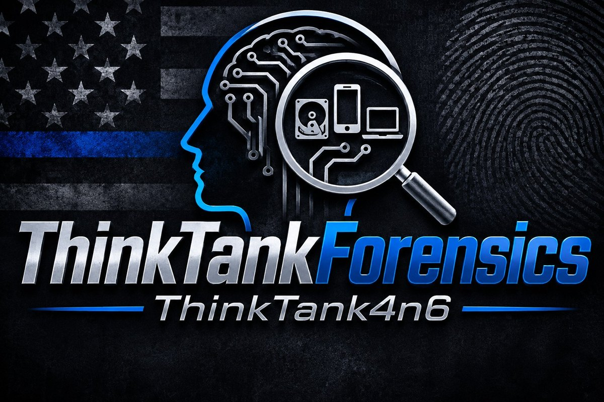
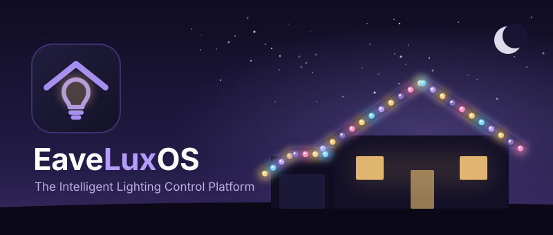

Better tools, built by the people who use them
Forensic software shaped by daily casework, plus a home project or two. Free, open-source and verifiable down to the hash.

Projects
Two collections: tools for the forensic lab, and projects for around the house.
DFIR
Digital forensics and incident response tools for examiners: recovering, carving and grading media from evidence.
- Forensic Media Extractor
- DVR Forensic Extractor

Home
Projects for around the house, starting with smarter control of permanent holiday and architectural lights.
- EaveLuxOS
- Community patterns
Verify what you downloaded
Compare your file's SHA-256 to the hash listed on the GitHub release page before you run it.
1. Download
Use the download buttons on a project, or pick an asset from its release page on GitHub.
2. Hash it
Windows: run certutil in Command Prompt. macOS or Linux: run shasum -a 256.
3. Compare
The value must match the release notes exactly. If it doesn't, don't run it, and open an issue.
certutil -hashfile FME-v2026.11.271.zip SHA256 shasum -a 256 FME-v2026.11.271.zip
About
I'm Christopher A. Tankelewicz, a digital forensic examiner. I build tools that remove friction from my own work, then release them so others can use, check and improve them.
All projects are released under the MIT license: free to use, modify and share, provided without warranty.
These are independent personal projects, written on my own time and equipment. They are not products of, endorsed by, or affiliated with any government agency or employer.
Bug reports and feature requests are welcome as GitHub issues on each project.
Find these tools useful? They're free and always will be. If one saved you time, you're welcome to buy me a coffee.
Buy me a coffee Via Venmo: @Christopher-Tankelewicz. Entirely optional; it never unlocks features or support.